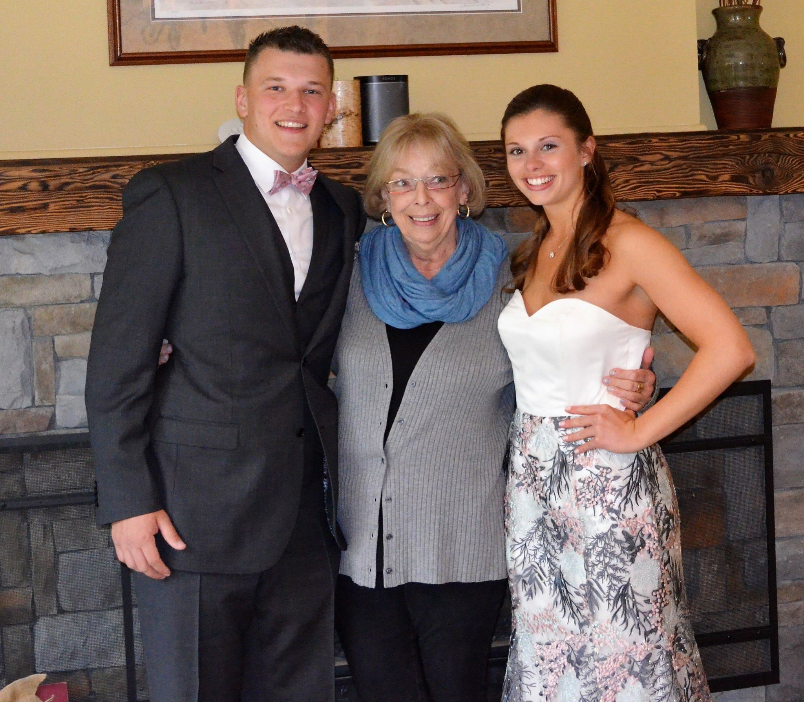

I'm 18 years old and have been playing baseball for my entire life! I started when I was 4 years old and I've loved every minute of it! That was what brought me to the University of Maine. Ever since I was a little kid, I always wanted to play college baseball and professional baseball. I'm so proud that I get to represent UMaine on and off of the field! I'm excited to be apart of the phenomenal baseball tradition UMaine has and to continue adding to it! Alright enough about sports and onto my family!
I have one brother and he is 20 years old and attends Adelphi University, which is about 20 minutes outside of Manhattan. He also plays baseball there! Both of my parents are elementary teachers; my Dad is gym teacher and my Mom is an AIS remedial reading and math teacher. Also we have an old pup, his name is Taggert and he just turned 12 years old! He's a rescue pup from Hurricane Katrina and he's the best dog in the world! Another notable thing is that my family built an apartment onto our house for my Grama because when my Grandpa died, she could afford to live by herself. It was the best move ever because now my Grama is one of the biggest parts of my life and it's awesome! She comes to all of our games and supports us which is the best because she always roots the loudest! She's in the middle of the picture below!
